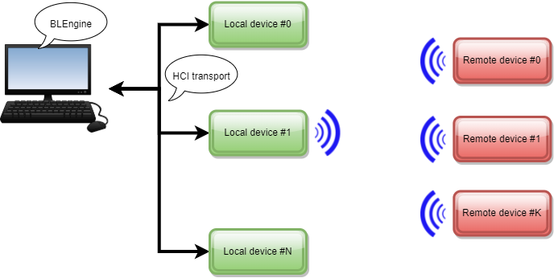

HCI Device API
Vocabulary and setup
For clarity we talk about Local Device and Remote Device in this section according to the picture exposed below.

This picture shows several so called Local Devices and several Remote Devices. The number of these devices ranges from 0 to the infinity (in theory). The local devices are connected to the host computer through USB links. Each link creates a virtual serial communication port by which the local device will receive HCI commands.
Each local device is managed on the computer side by an instance of this object. One instance opens one specific communication port so it can communicate with one single physical local device through a set of HCI commands.
Depending on the scenario, the Local Device can be configured in either Central or Peripheral Role.
A Remote Device is a Bluetooth device in the surrounding of the Local Device. It is either discovered by a local device via a scan or it discovers and connects to the local device if the local device is in Connectable Advertising State.
In this setup, one local device instance can instruct its connected local device to scan the surrounding BLE environment to find remote devices. This might end up in having several remote devices controlled by one single local device through its corresponding local device instance.
Introduction
Enable communication with a Bluetooth LE Controller via HCI in a simple way.
These Classes implement a high-level representation of a Low Energy Bluetooth device.
Common HCI Commands convenience functions (setName etc…)
Legacy and Low Energy Extended Scan support
Legacy and Extended Advertising Support
To work with local device (dongles), a HCILocalDevice instance can be used.
This class inherits from the BLEDevice and has specific functions and attributes to work
with. It retains a list of remotes devices automatically created and updated when
the device performs a scan.
The remote devices class instances HCIRemoteDevices created by a local device
implements all the functions related to a remote device from the local one. For that, it relies on the engine to send commands to the remote devices.
It is not recommended to directly create a HCIRemoteDevice. It’s better to grab an instance by using the HCILocalDevice.get_device() function.
The class supports both Legacy and Extended Advertising, the choice is automatically following the LE Features
One thing to be noted is that, regarding a remote_device instance, it always belongs to a local device, the usage of the local device engine to send command is transparent and implicit, i.e.:
you call
remote_device.connect()to connect to a remote device, and notlocal_device.connect(remote_device)Advertisements are processed and stored by each Remote Devices.
Local Device Usage
An HCILocalDevice needs a configured engine to communicate with the device and optionally the Bluetooth address and a name to identify it.
from blengine import enable_cli_args
from blengine.core import transport, logger
from blengine.hci.devices import HCILocalDevice
# initiate root logger with name and get the instance
log = logger.init("MyFirstScript")
# get default blengine options
args = enable_cli_args()
# get 9305 config
conf = config.get("9305")
# Create an HCiEngine from device provided be the --device cli arg
engine = HCIEngine(transport.serial_from_config(args.device))
# Create a local device relying on the previously created engine.
local_device = HCILocalDevice(engine)
You can also optionally provide a predefined Bluetooth mac address and a custom name if needed.
from blengine.utils.MacAddress import mac
local_device = HCILocalDevice(engine, bd_addr = mac("AA:BB:CC:DD:EE:FF"), name = "MYDEVICE")
Useful Properties and methods
Once a Device is created, it’s useful to gather some data from the connected device to determine its capabilities.
import pprint
infos = local_device.get_device_infos()
pprint.pprint(infos)
The get_device_infos function calls the HCI.get_local_device_infos procedure, which will populate the local_device.device_infos dictionary with relevant and useful information.
It will return something like this on a BLE Controller:
{'Advertising_TX_Power_Level': 0,
'Bluetooth_Version': '5.3',
'Company': 90,
'Device_Model': 'EM9305',
'Firmware': 'EMSHI',
'Firmware_Version': '',
'HCI_SubVersion': 514,
'HCI_Version': 12,
'LE_Features': '1111111110010010100000000000000000000000000000000000000000000000',
'LE_Supported_Features': ['LE Encryption',
'Connection Parameters Request procedure',
'Extended Reject Indication',
'Peripheral-initiated Features Exchange',
'LE Ping',
'LE Data Packet Length Extension',
'LL Privacy',
'Extended Scanner Filter Policies ',
'LE 2M PHY',
'LE Coded PHY',
'Channel Selection Algorithm #2',
'Minimum Number of Used Channels procedure'],
'LE_Supported_States': 255,
'LMP_Features': '0000000000000000000000000000000000000110000000000000000000000000',
'LMP_Features_Page_1': None,
'LMP_Features_Page_2': None,
'LMP_Subversion': 4608,
'LMP_Supported_Features': ['BR/EDR Not Supported',
'LE Supported (Controller)'],
'LMP_Version': 12,
'MAC': None,
'Max_CTE_Length': None,
'Max_Switching_Pattern_Length': None,
'Max_TX_Power': 6,
'Min_TX_Power': 0,
'Num_Antennae': None,
'Num_Supported_Advertising_Sets': None,
'RF_RX_Path_Compensation_Value': 0,
'RF_TX_Path_Compensation_Value': 0,
'Suggested_Max_TX_Octets': 27,
'Suggested_Max_TX_Time': 328,
'Supported_Max_TX_Octets': None,
'Supported_Switching_Sampling_Rates': None}
Remote Device Usage
The simple way to create a remote device object is to scan the surrounding environment by using the local_device.scan() function.
When scanning, the local device collects the advertisment packets and updates the local_device.remote_devices list accordingly.
This enables triggering events directly on the remote device, once a remote device is created.
Advertising Report (Extended, Directed, Etc…)
Disconnection
PHY Update
Connection Parameters Update
Etc…
Basic Example
The following example scans and connects to a remote device.
import time
from blengine import enable_cli_args
from blengine.core import logger
from blengine.core.config import config
from blengine.core.transport import serial_from_config
from blengine.hci.engine import HciEngine
from blengine.hci.devices import HCILocalDevice
from blengine.utils.macaddress import mac
from blengine.hci.procedures.EMSystem import emsystem_prog
# initiate root logger with name and get the instance
log = logger.init("MyFirstScript")
# get default blengine options
args = enable_cli_args()
# get 9305 config
conf = config.get("9305")
# create an hci engine with serial transport
engine = HciEngine(serial_from_config(conf))
# create a Local Device
local_device = HCILocalDevice(engine)
# Set all events
local_device.set_event_mask(mask = 0xFFFFFFFFFFFFFFFF,
mask_page_2 = 0xFFFFFFFFFFFFFFFF,
LE_mask=0xFFFFFFFFFFFFFFFF)
# scan for 3 seconds
local_device.start_scan()
time.sleep(3)
local_device.stop_scan()
# get a remote device
remote = local_device.get_nearest_device()
#remote = local_device.get_device(name="TARGET_DEVICE")
# or by mac address
# remote = local_device.get_device(addr="00:22:33:22:00:22")
assert remote is not None, "remote device not found"
remote.connect()
log.info("remote device :%s" % remote)
print("Connection Handle %s" % remote.conn_handle)
remote.disconnect()
Advanced Scan Usage
This script shows how to access to received advertisements and other useful remote device functions.
... init stuff ...
local_device = HCILocalDevice(engine)
log.info("start scan")
# scan for 3 seconds
local_device.start_scan()
time.sleep(3)
local_device.stop_scan()
# show infos for each devices discovered
for device in local_device.remote_devices:
# show name and device addre
print("discovered %s (%s)" % (device.name or "<noname>", device.bd_addr))
# show interval and rssi
interval = device.compute_interval()
rssi = device.compute_rssi()
print("\tmean interval: %s ms" % interval)
print("\tmean rssi: %s dBm" % rssi)
# show advertisements decoded data
print("\tadvertisements:")
# device. advertisiements is a simple dictionary with PDU name as key and decoded data as value
for adv_name, adv_data in device.advertisements.items():
print("\t\t%s: %s" % (adv_name, adv_data))
print("")
Advertising
Advertising Custom Data
This script shows how to set custom or standard advertising data PDU and advertise it for 15 seconds.
class MyCustomAdvertisingData(GenericPacket):
'''
Custom packet data defintion in a packet for easy decoding by another device
'''
def __init__(self, data=b''):
super().__init__("Custom Manufacturer Data", data)
self.extend([
Fragment("somebytes", structure = "<HB"),
Fragment("iamutf8", structure = "utf8"),
Fragment("canbeanything", structure = None),
])
# create a basic custom packet for writing on the dut
custom_adv_packet = MyCustomAdvertisingData()
custom_adv_packet.set("somebytes", [ 0x1234, 0x56 ])
custom_adv_packet.set("iamutf8", "hello")
custom_adv_packet.set("canbeanything", b'world')
#
engine = HciEngine(serial_from_config(conf))
local_device = HCILocalDevice(engine)
advertising_data_dict = {
# supported flags :
# GAP_AD_Flags
# GAP_AD_UUID_Incomplete_List_32
# GAP_AD_UUID_Complete_List_32
# GAP_AD_UUID_Incomplete_List_128
# GAP_AD_UUID_Complete_List_128
# GAP_AD_Short_Local_Name
# GAP_AD_TX_Power
# GAP_AD_Service_Data_16
# GAP_AD_Service_Data_32
# GAP_AD_Service_Data_128
# GAP_UUID_Incomplete_List_16"
"GAP_AD_Short_Local_Name": "ADV",
"GAP_AD_Manufacturer_Specific_Data": custom_adv_packet.encode()
}
pkt = local_device.send("LE_Set_Extended_Advertising_Parameters",
Advertising_Handle=0x01,
Advertising_Event_Properties=0x01, # Connectable. Bit 4 = 0 for Extended Advertising
Primary_Advertising_Interval_Min=0x000050,
Primary_Advertising_Interval_Max=0x000080,
Peer_Address=local_device.bd_addr,
)
adv_data = local_device.set_advertising_data(advertising_data_dict)
local_device.start_advertising()
time.sleep(15)
local_device.stop_advertising()
Parsing custom advertising data
In combination with the custom advertising script below, this script decodes the custom manufacturer data packets.
remote_name = "ADV"
class MyCustomAdvertisingData(GenericPacket):
'''
Custom packet data definition in a packet for easy decoding by another device
'''
def __init__(self, data=b''):
super().__init__("Custom Manufacturer Data", data)
self.extend([
Fragment("somebytes", structure = "<HB"),
Fragment("iamutf8", structure = "utf8"),
Fragment("canbeanything", structure = None),
])
# cerate a basic custom packet for writing on the dut
custom_adv_packet = MyCustomAdvertisingData()
local_device = HCILocalDevice(engine)
local_device.set_event_mask(mask = 0xFFFFFFFFFFFFFFFF,
mask_page_2 = 0xFFFFFFFFFFFFFFFF,
LE_mask=0xFFFFFFFFFFFFFFFF)
log.info("start scan")
# scan for 3 seconds
local_device.start_scan()
time.sleep(5)
local_device.stop_scan()
for r in local_device.remote_devices:
print(r)
remote = local_device.get_device(name=remote_name)
assert remote is not None, "Remote device not found"
# show name and device addre
print("discovered %s (%s)" % (remote.name or "<noname>", remote.bd_addr))
custom_adv_packet.decode(remote.advertisements["GAP_AD_Manufacturer_Specific_Data"])
print(custom_adv_packet)